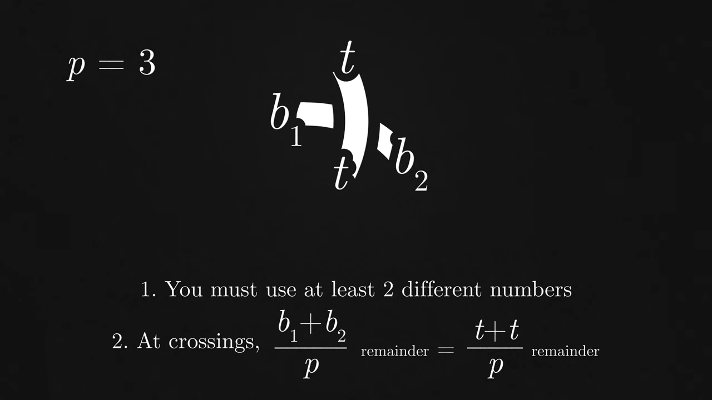
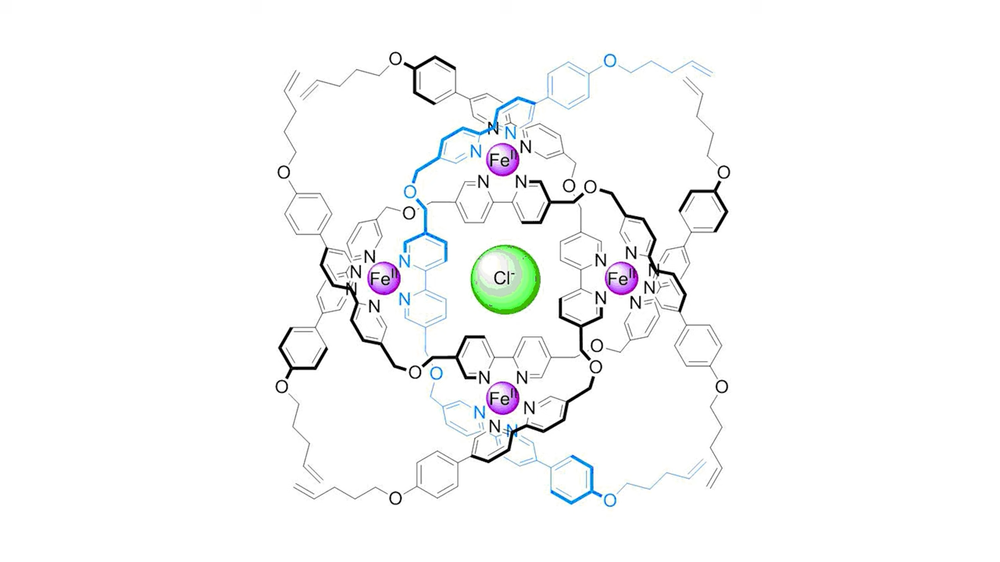

Knot Theory
Table of Contents
YT: How The Most Useless Branch of Math Could Save Your Life (elfeed)
1. Composite and Prime Knots
Knots are additive. You can stick multiple knots together to make a new knot. This is called a composite knot, but some knots aren't decomposable into simpler knots. These are known as prime knots.
Since all composite knots are just built from primes, people mainly focus on tabulating prime knots.
2. Knot Equivalence Problem
Turing believed it was undecidable, but it is not.
2.1. Reidemeister Moves
Proved by German mathematician Kurt Reidemeister in 1927. You only need three types of moves to transform any two identical knots into each other.
- The twist,
- the poke and
- the slide: where you move a string from one side of a crossing to the other.
Now we can prove some knots are the same: if they're connected by Reidemeister moves. But this still can't be use to prove two knots are different from each other.
2.2. Upper Bound on Reidemeister Moves
In 2011, Alexander Coward and Mac Lackenby found upper bound on Reidemeister Moves to convert between any two links. This solved the Knot Equivalence Problem.
But the upper bound is very big:
\((2\uparrow\uparrow10^{1,000,000})^n\)
2.3. Invariants
There are some properties of a knot that never change, no matter how much you twist or tangle it up. These are called invariants, and these invariants will be different for some knots compared to other ones.
2.3.1. Crossing Number
Different variations of same knot (know as different projections of that knot) can have different numbers of crossings. So, crossing number is the least number of crossings a knot can have. i.e. crossings in the reduced form of the knot.
2.3.2. Tri-Colorability
Tricolorability = Can a knot be colored with 3 colors or not?
- You must use at least two colors because you can color any knot in with one color.
- And second, at crossings, the three intersecting strands must either be all the same color or all different colors. Basically no two colored crossings.
This is an invariant becuase the Reidemeister Moves preserver the Tri-colorability
2.3.3. p-colorability
Same a tri-colorability with p = any prime except 2

Figure 1: p-colorability
3. Practical Application in Chemistry
In 1989, chemist Jean-Pierre Sauvage tied molecules around copper ions to form the first ever synthetic knotted molecule. This trefoil knot restricted the atoms from unfurling, trapping them in higher energy states to give the molecule new properties.
The most complex knot yet created is the 819 knot with 192 atoms tied around a central chloride ion. This molecule holds the Guinness World Record for tightest knot in the world, defined as the most crossings per unit length, in this case, eight crossings in 20 nanometers. Since it's knotted around a chloride ion, once the ion is removed, this molecule is one of the strongest chloride binders in existence

Figure 2: Chloride Binder - 819 Knot
4. Biology
00:27:55 Type II Topoisomerase is an enzyme that cuts entangled DNA and separates them for copying.
Some antibiotics inhibit the Type II Topoisomerase of bacterias to inhibit their replication.